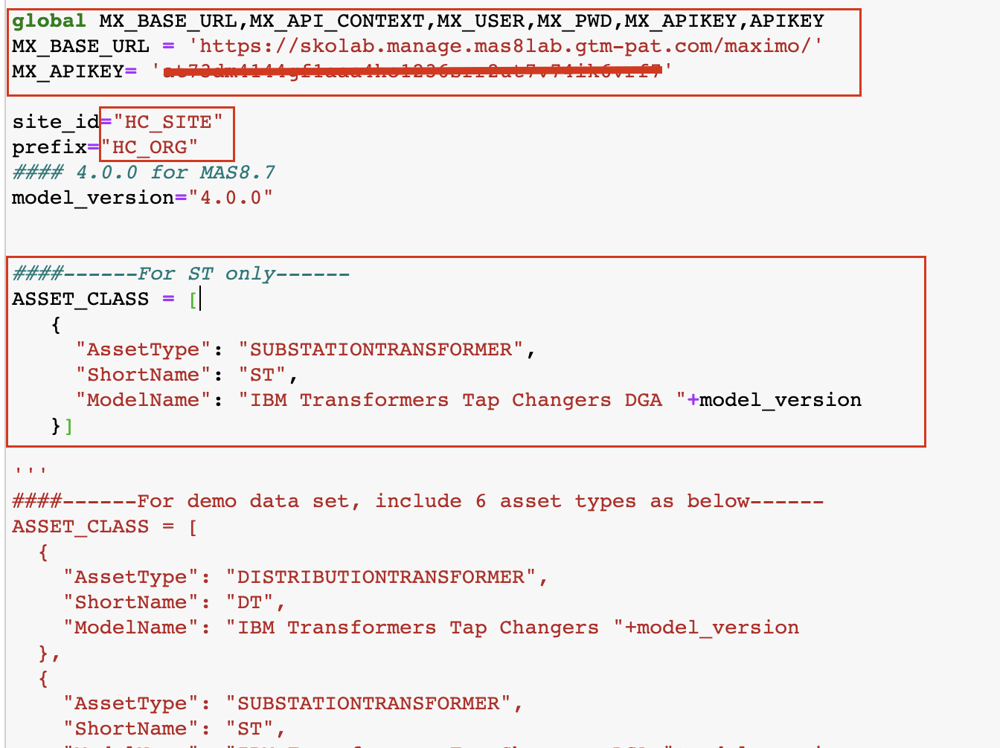
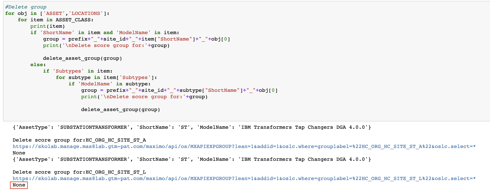
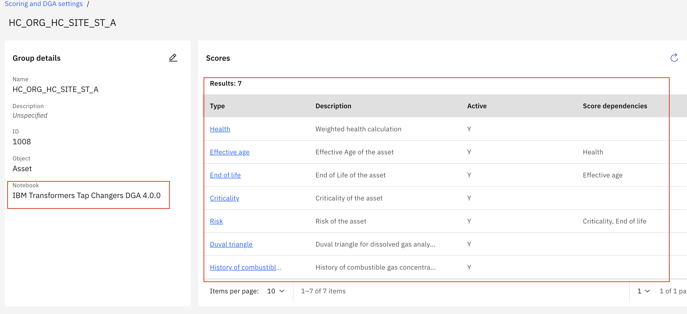
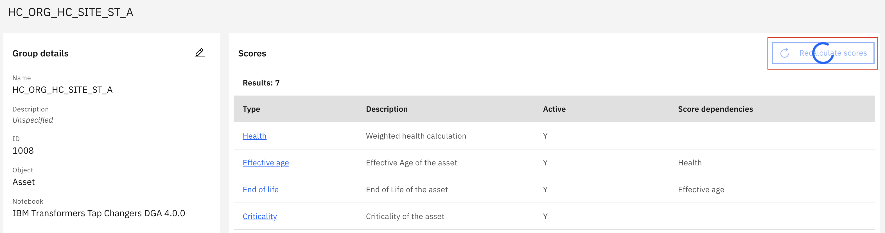
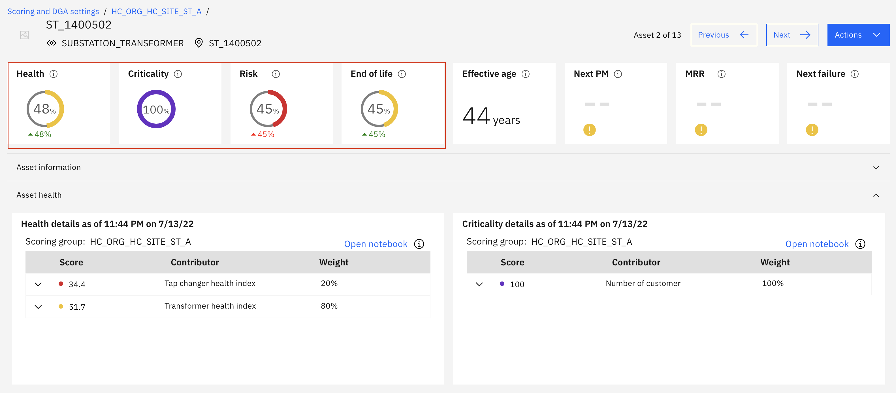

Load Utilities Health Scores via Notebook
Maximo Predict comes with notebook templates to assist in streamlining data uploads of the industry standard health score for utilities assets into Maximo Health. This notebook will Create a health scoring group and the associated health, risk, criticality, effective age, end of life, duval triangle and the history of combustible gases scores. These instructions will be based off using the '1_Create-HPU-ScoreGroups.ipynb' file with the Substation Transformer Health and Predict for Utilities Demo Assets.
In this exercise you will use Watson Studio, Manage and Predict to:
- Upload the and Run the HPU Health Score Group notebook using a template to upload new Asset and Location Data to Maximo Manage.
- Confirm Scoring groups have been created and scores have been calculated
- Handle Errors that may come up in the process
Note
You must complete the previous exercise for Setup Watson Studio before you start this exercise.
This notebook can only be run once per environment per site with the same set of assets.
Pre-requisites
- Review Predict documentation for the list of available models.
- Ensure your MAS Predict environment is running and you have access. Try your server URL that might look something like: https://main.predict.ivt11rel87.ivt.suite.myhost.com/ibm/pmi/service/rest/system/info
- Ensure you have Access to Asset data files for the Health and Predict Utilities Demo Data
- Complete the Load Data into Manage lab for the Utilities data.
- Have the following information from the previous lab:
MX_BASE_URL,API_KEY,SITE_IDandORG_ID
Note
It is best to perform this lab in your own Watson Studio Project created using Setup Watson Studio instructions. If you are using a shared project, ensure you append each file uploaded with your initials and update the file paths in the notebooks to include that change.
Upload files and run the Data Loader Notebook
Load Data into Manage lab to your project. Use the steps from the previous exercise Add Notebook From File to a Watson Studio Project.
Select the 1_Create-HPU-ScoreGroups.ipynb notebook template.
Click on the pencil icon next to your notebook to open it in edit mode.
If the notebook fails to start, restart it. Click on the i icon , Environment tab, Running status dropdown select box and choose Restart

-
Run the first cell to import packages
-
Add the
MX_BASE_URLandAPI_KEYfrom the previous lab to cell 2. -
Make sure to added api key value to
ENDPOINT EXTENGINEAPI. -
Update the site id value to your
SITE_IDand the prefix value to your org idORG_IDin the second cell . -
Uncomment the asset class you will be uploading. In this lab we will be focusing on only Substation Transformer, so the first
ASSET_CLASSlist containing only one item is uncommented. If we were uploading all demo asset classes available in the github, uncomment the second section. If you have additional assets, use the third list and uncomment as needed. Here are two ways to comment out a cell: add a#to the beginning of each line or add'''to the beginning and end of a section of code for it to be ignored when run

-
Run the next cell to define the API call for Maximo
-
Run the next 3 cells to define function for creating the following:
-
The query that will be used to build the health scores
-
Get the scores list and activate the scores
-
Create the asset group, create scores for the asset group and clean up
-
-
Run the next cell to delete any existing asset score groups for your data. If none exists, the cell will output
None.

-
Run the next cell to create the query for the Asset Scoring Group. This query will be made up of Asset Type and Site ID
-
Run the next cell to create the Asset Scoring Group using the query from the previous cell, Build the scores from the Industry Standard Provided notebooks, and activate the scores.
Confirm Proper Data Upload
The following steps will confirm that the data was uploaded properly
-
Navigate to
Maximo Health and Predict for Utilitiesfor the provided environment -
Go to the
Scoring and DGA Settingsapplication within Maximo H&PU -
Search for your Org or Site and notice that there are two score groups created - One for Assets and One for Locations. Notice the calculation type is
Connect group to notebooksince the scores are built via notebooks for the specific Asset Classification
 4. Click into the Score Groups and notice all the score types created via the Asset Type specific notebook listed in the
4. Click into the Score Groups and notice all the score types created via the Asset Type specific notebook listed in the Group Details section

5. Click Recalculate Scores and allow the scores to calculate
 6. Click into any asset and see that the scores have calculated 
Congratulations you have seen how to upload Health and Predict for utilities data via a notebook. You have also gained experience using Jupyter Notebooks in Watson Studio!
In the next exercises you will learn how to use the 1_Create-HPU-ScoreGroups.ipynb Notebook template to create health scores for Health and Predict for Utilities assets and associate the asset notebook to that created group.